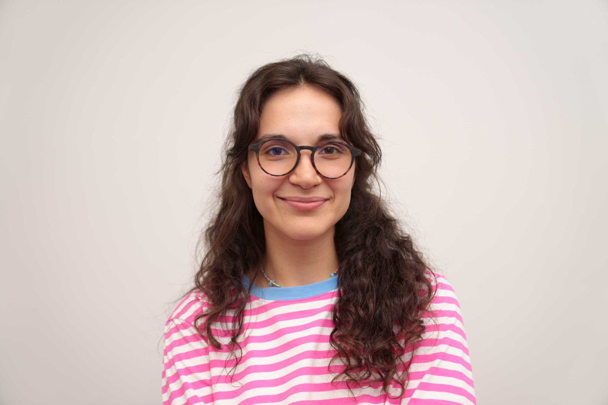

Lisa Mangupli
 Based: Melbourne, Victoria, Australia
Based: Melbourne, Victoria, Australia


About
As a software engineer with a background in both corporate and startup environments, I've had the opportunity to building scalable systems and in the FinTech, design and EdTech Industries.
I'm open for Front end or Full stack roles. If you are looking for a dedicated and motivated team-member for your project, please don't hesitate to get in touch!
Briefly
- 4+ years experience (
Typescript,React,Node,Redux Toolkit,SQL,Docker,HTML5,CSS,PHP) - Was a lead front-end developer at one the largest russian banks building BI-platform
- Worked for a couple of governmental projects but I'm not a Russian spy
More
- Finalist of several large hackathons in Russia
- Mentoring others in programming (and helping them fall in love with it)
- Passionate about EdTech
- Writing code for humans, simplicity is my beauty
 Experience
Experience
| Dates | Job |
|---|---|
| Mar 2023 - Jan 2024 | Javascript/Typescript Fullstack Mentor at Elbrus Coding Bootcamp. (Typescript, React, Jest,Redux Toolkit, NodeJS, Express JS, PostgreSQL, Docker. https://elbrusboot.camp/ |
| Nov 2022 - Jun 2023 | Lead Front-end developer in Moonk design studio. (freelance, remote). Adapted the company's online store for mobile devices, increased accessibility, worked on a cart functionality to increase the company's online sales. Javascript, PHP, JQuery, SASS, HTML Figma. https://moonk-design.com/ |
| Aug 2022 - May 2023 | Software developer in Eburet design studio (contract, St. Petersburg). Developed web-interface for robotic arm of 3D printer. Implemented and integrated a CRM system into business processes, developed online store. React.js, Python, Docker, Javascript, Tailwind. https://eburet.com/ |
| Sep 2022 - Nov 2022 | Lead Front-end developer in Moscow Post (contract, remote). Implemented interface for a recommendation service that tells managers in which location is best to place pick-up points. Redux Toolkit, React.js, Webpack, SCSS, Swagger API. https://www.mos.ru/ |
| Jun 2022 - Sep 2022 | Full-stack developer at The Ministry of Industries and Production (contract, remote). Worked on building marketplace of Moscow manufacturers and analytics platform. Implemented SPA application and collected dataset for our recommendation model. React.js, Python, Docker, Material-UI. |
| Jun 2021 - May 2022 | Software developer at Sovcom bank (Javascript, Chart.js, Data engineering, SQL. https://sovcombank.ru/en/ |
| Sep 2019 - Aug 2020 | Frontend developer at Barre One fitness studio (JavaScript, CSS, HTML, Usability Testing,User Experience (UX), A/B Testing. https://www.barre.one/ |
 Education
Education
Computer Science. 42 Ecole a private institution of higher education (Kazan, Russia).
2020 - 2022
Designed the architecture and implemented a command interpreter. Created simple game engine for 3D shooter.Implemented standard C++ containers. Developed unit-tests for every container. Deployed microservices-based application in Kubernetes (ngnix + MySQL + phpMyAdmin + Grafana + Wordpress).
Skills: C, C++, Kubernetes, Unit Testing,TDD, Microservices,Technical Solution Design
Diploma of Management. Russian Institute of Performing arts (St. Petersburg, Russia)
2016 - 2022
As a result of graduate thesis I designed CRM system for performing arts companies, >90% of which did not use it at the moment. 4 large theaters of St. Petersburg showed interest in such software, because it could improve their data storage and help to know their clients better.
PS: This is my CV but you can fork the repo and make the one for yourself. Read src/README.md.